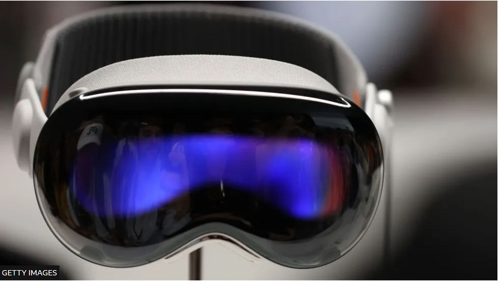

Apple Vision Pro: $3,499 headset finally gets release date
09.01.2024

By Tom Gerken & Zoe Kleinman
Apple has announced its long-awaited Vision Pro headset will go on sale on 2 February in the United States.
US customers have been given the option to pre-order the $3,499 (£2,749) mixed-reality device from mid-January, though no date has been set for a UK launch.
It is the first major new product to be released by the firm since the Apple Watch launched in 2015.
After years of rumours during development, the company revealed the headset in June 2023.
But there have been issues since then. According to the Financial Times, Apple has more than halved its production forecasts, dropping from an estimated one million units to 400,000 in 2024.
As well as the release date, Apple also announced the device will have 256GB of storage, and it clarified that the headset's eye-tracking technology can function by monitoring just one dominant eye, for people who do not have full use of both their eyes.
But interestingly the firm is trying to separate the headset from other devices on the market, telling developers for the device to instead brand their apps as "spatial computing".
"Don't describe your app experience as augmented reality (AR), virtual reality (VR), extended reality (XR), or mixed reality (MR)," it said in a blog post targeting developers.
Apple has also released a trailer online, featuring characters from films donning goggles and helmets, in what feels like an attempt to recreate the hype around the launch of the iPhone in 2007.
If successful, this could be a new multi-billion dollar source of income for Apple. But as many people all over the world struggle to afford life's basics, the high price tag is likely to keep this in the realm of a toy for the well-off.
Hands-on
The BBC had the opportunity to try out the Vision Pro in June last year, and found mixed reality to be a mixed bag.
We were among the few news organisations in the world allowed to test out the device - but no photos or filming were allowed.
Unlike many existing headsets, Apple has detached the battery, so it doesn't sit heavy on your head - although it does mean the battery has to sit beside you instead, attached to a cable.
The user experience is classic, minimalist Apple. Once the headset is on, you see the room around you but you're not seeing it through glass, you're seeing it through the many on-board cameras.
This is the "mixed-reality" experience - digital content projected on to your surroundings.
You physically press a single button on the top right-hand side of the headset, and up pops familiar app icons you'll recognise if you have used an iPhone - iMessage, Photos, Apple TV (there will be more as developers make them).
And from then on it's all about gesture control - the headset tracks where you are looking so when you look at an app and pinch your thumb and forefinger together, it opens.
You can choose your level of immersion using a physical dial to turn up or down the size of whatever it is that you're looking at. It can fill the entire room or appear like a TV screen superimposed against your wall.
But if someone walks in front of you in real life, you can see them no matter how immersed you are.
Still, whenever there was an issue with the demo, an Apple employee would remind us that it was not a finished product, and Apple's ban on any filming during the demonstration meant that these issues couldn't be recorded or shared online.
Read Zoe's full review here.